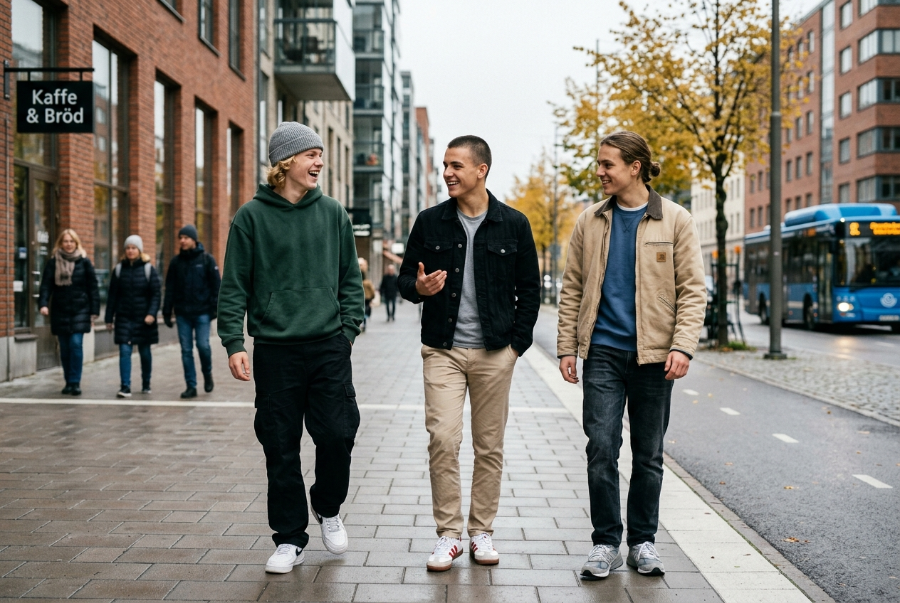

Livskunskap

Konsten att inte stressa sönder gymnasiet: 5 strategier
Betygspress och förväntningar. Så behåller du lugnet, pluggar smartare och räddar både sömnen och fritiden.
Livet mellan 15 och 18 är fullt av val, krav och förväntningar. UNG MAN är platsen där du lär dig det skolan glömde: hantera vardagen, bygga sunda vanor, förstå din ekonomi, använda ny teknik och skapa din egen väg.

"Du jämför ofta ditt eget vardagskaos med andras höjdpunkter på sociala medier. Ingen visar sina tvivel i sitt flöde."
Fem sammanhängande områden som ger dig praktiska färdigheter, trygghet och mod att testa idéer.
Hur du hanterar stress, sätter sunda gränser mot kompisar och lär dig vuxenlivets grunder – från första hyreskontraktet till att hantera pengar.
Träning utan toxisk hets, sömnens superkrafter och hur du tar hand om huvudet när prestationsångesten och kraven hopar sig.
Sluta vara en passiv konsument. Lär dig använda artificiell intelligens för skolarbete, börja koda dina egna projekt och förstå framtidens arbetsmarknad.
Ta dina idéer från anteckningsblocket till verkligheten. Guider för gymnasiet UF-företagande, musikproduktion, portfolio och entreprenörskap.
Smarta digitala hjälpmedel du kan använda direkt i webbläsaren: Livshjulet för balans, CSN/ungdomsbudget och Pomodoro-fokusklocka.
När det är tungt och ingen i närheten förstår. Direktlänkar till kostnadsfritt, anonymt samtalsstöd dygnet runt.
Konkreta artiklar skrivna med respekt och praktisk nytta i fokus.
Betygspress och förväntningar. Så behåller du lugnet, pluggar smartare och räddar både sömnen och fritiden.

Glöm dyra kosttillskott och extrema scheman. Här är de 4 basövningarna och hur du bygger långsiktig styrka.
Lär dig prompta för att förstå matte, bolla idéer för uppsatser och öva inför prov med AI som sparringpartner.
Inga polerade fasader eller skryt. Bara ärliga berättelser om val, tvivel och framgångar.

Felix berättar om modet att erkänna att man valt fel väg, hur rektorn hjälpte till med bytet och varför det inte var ett år bortkastat.
Liam och Noah startade ett lokalt designmärke på gymnasiet i Göteborg och delar med sig av vad de lärde sig om pengar, ansvar och samarbete.